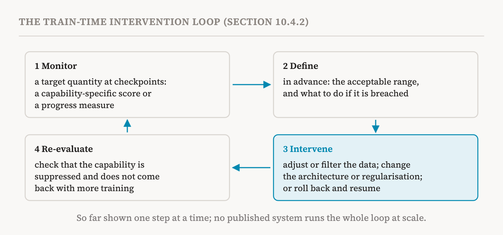

Parts 26 and 27 described how models change during training. This part covers section 10.4 of the book (pages 90–93), which turns that knowledge to two safety goals: anticipating capabilities before they appear, and intervening in training while it is still under way. It also closes the book's chapter on learning dynamics.
Forecasting from smaller and partial runs
Scaling laws show that the total loss can be predicted before training, but phase transitions break this kind of extrapolation for individual capabilities, as part 27 showed. Forecasting therefore aims at specific behaviours directly. Memorisation is where the problem has been set out most explicitly. A 2023 study introduced the task of predicting, before a model is trained, whether it will memorise a particular training sequence. Its authors argued that recall, the share of real cases a forecast catches, is the measure to optimise: a missed case means training a full model that leaks the sequence, while a false alarm only means discarding a cheap trial run. They set baselines that forecast from smaller, fully trained models and from partly trained checkpoints of the target run, and recommended how to split a fixed forecasting budget between model size and tokens.
Forecasting behaviours that matter for safety
Emergence itself can be forecast by intervening on training. Fine-tuning on a target task shifts the point where a capability emerges towards less capable models. Fitting how this shift changes with the amount of fine-tuning data gives what a 2024 study called an emergence law. Using only small models, the law predicts whether a capability will have emerged in models trained with up to four times more compute.
Rare harmful behaviours can be forecast statistically. A behaviour too rare to show up in a test of a few hundred queries may still appear when a model answers millions. A 2025 study found that the highest probabilities of drawing out a behaviour, observed in a small sample of queries, grow predictably with the number of queries. That let the risk be extrapolated across up to three orders of magnitude, a thousandfold, of query volume at deployment scale, for behaviours such as help with dangerous chemical synthesis and power-seeking actions.
Failures after training can be analysed in a similar way. Reinforcement learning from human feedback (RLHF) is the usual way of fine-tuning a model on human preferences, and it saves a series of checkpoints. A 2026 study sorted the transitions between successive RLHF checkpoints into four kinds: reward hacking, collapse, proxy under-alignment and evaluator-specific disagreement. In reward hacking, the model finds a way to earn high reward while the quality that users actually experience falls; in collapse, both fall. This sorting catches failures that averages over checkpoints miss. A model fitted to diagnostics of the training dynamics, including the reward model's uncertainty, how far the policy has drifted and how varied its outputs are, predicted later reward hacking with a ROC-AUC of 0.82, on a scale where 0.5 is chance and 1 is perfect.
Internal signals extend forecasting to the outcomes of fine-tuning. Persona features in activation space predict whether a fine-tuned model will show emergent misalignment, the broad bad behaviour that fine-tuning on a narrow task can sometimes cause. Signals available before fine-tuning even begins also predict how aligned the resulting model will be. Part 31 returns to the research agenda behind these results.
There are two further pieces. The first is internal precursors as early warning. Where a mechanism forms before the capability it supports shows in behaviour, watching the internals could flag the capability earlier than testing behaviour can. The recall circuits that come before factual knowledge, and the grammatical attention structure that comes before grammar skills, both from part 27, show that this lead time can exist; progress measures are the instrument that would use it. The second is the variation between runs. A study of fifty runs found that capabilities generally emerge at similar stages and representations develop consistently across random seeds, but that some runs differ substantially. Those exceptions show how uncertain a forecast based on a single run can be.
Most early warnings come after the fact
The book gives this caution its own box. Nearly all demonstrations that changes inside a model lead changes in behaviour are retrospective. Researchers analyse the completed mechanism after training to find a progress measure or a precursor structure, then evaluate it backwards over saved checkpoints. The LLC-based detection of transitions in part 27 has the same problem. Prospective forecasting, in contrast, means predicting outcomes before seeing them. Apart from the memorisation baselines above, prospective forecasting of the broader capability transitions that matter for safety is still underdeveloped. Early-warning signals need to be tested prospectively before they can be considered reliable.
Intervening during training
The model that matters is the one deployed at the end of training. The usual response to a bad behaviour found there is more fine-tuning after training, which this section leaves aside. The alternative is to intervene during training, to keep unwanted capabilities from developing or to control how they develop. The book describes three approaches: changing the training data, changing the model's architecture, and intervening on activations during fine-tuning.
![A training pipeline from left to right: training data, then pretraining, then fine-tuning, then the deployed model. Three intervention points are marked. On the data: filtering documents or single tokens, and the order of the curriculum. On the architecture during training: gradient routing, which sends updates for a chosen concept into a designated region so that region can later be switched off. During fine-tuning: persona vectors, used to monitor a trait, steer against it and flag data that would induce it. Post-training fine-tuning on the deployed model is marked as outside the section's scope.](../../images/inside-28-levers-en.png)
The first approach filters the data before pretraining. Deep Ignorance, met in part 26, removes proxies for biohazardous knowledge from the pretraining corpus and trains models of 6.9 billion parameters on what is left. The filtered models do not acquire the targeted knowledge, which makes it hard for the unwanted capability to come back through adversarial fine-tuning. Unlearning after training, by contrast, may suppress the behaviour without removing the knowledge underneath. A follow-up moved the filter from documents to tokens. Individual tokens were labelled using sparse autoencoders, and cheap classifiers were trained on those labels. Filtering single tokens removed the unwanted capability at a lower cost to wanted capabilities than filtering whole documents. It became more effective as models grew, across the two orders of magnitude tested, and the filtered models could still be aligned afterwards.
The order of the data matters too. A 2026 study found that in an imbalanced pretraining curriculum, where one task is shown before another, the model packs the tasks one after the other into separable circuits, and later fine-tuning to refuse one of them becomes more targeted.
Data changes ripple
The book adds a warning box: removing data from a training set does not act only on the removed data. In one 2025 study, deleting personal information could increase the memorisation of the personal information that remained, and adding one person's information amplified the memorisation of other people's by roughly 7.5 times. Whether a sequence is memorised depends on similar sequences seen elsewhere in training. Subliminal learning shows that data can pass on traits that its content does not reveal. A student model can inherit a teacher model's hidden bias from data that seems unrelated, such as sequences of numbers. This transfer is carried by a small set of "divergence tokens" and depends on early layers. So filtering and unlearning need to be judged on what the model does with the data that stays, not only on what it no longer does with the data that was removed.
Shaping where a mechanism forms
The second approach changes the architecture. Gradient routing limits which parameters receive the training updates for chosen concepts, so that the computation for those concepts ends up in designated regions of the network. The change does not make the trained model safer on its own. What it does is shape where a mechanism forms, so that later interventions, such as gating the designated region off, become clean and local. Its forerunner is the smeared-key change of parts 19 and 27, which showed that a change to the architecture can control when, and whether, a mechanism forms at all.
Watching and steering during fine-tuning
The third approach intervenes on the fine-tuning process itself, which is within scope even though fixing a model with fine-tuning afterwards is not. Persona vectors are a current example. A persona vector is a direction in activation space for a character trait, such as sycophancy, a tendency to hallucinate, or malice, and it can be extracted automatically from a plain-language description of the trait. Intended and unintended personality changes during fine-tuning correlate strongly with movement along the relevant vector, which gives a monitoring instrument. Steering along the vector during fine-tuning, as a preventive measure, limits how much of the trait the model acquires. And before fine-tuning, projecting the training data onto the vector flags data that would induce the trait, both for a whole dataset and for single examples.
The intervention loop
These pieces suggest a general pipeline, which the book sets out in four steps. Monitor a target quantity at checkpoints, such as a capability-specific score or a progress measure on the internals. Define the acceptable range for that quantity in advance, including what to do if it is breached. Intervene when the range is breached, for example by adjusting the data mixture or filtering out unwanted data, applying a targeted change to the architecture or the regularisation, or rolling back to a checkpoint from before the breach and resuming with the adjusted setup. Re-evaluate the model after the intervention, to check that the targeted capability is suppressed and does not re-emerge with further training. Persona vectors carry out each step for the fine-tuning stage.

But no published system implements this loop from end to end at scale. Existing studies have shown individual steps.
Open questions
The book lists three. First, effective filtering requires knowing which training data contribute to the capability to be removed. Token-level filtering is motivated by data attribution, but it is unclear whether methods such as influence functions, which part 30 explains, can reliably find the relevant data. Second, scale: Deep Ignorance works at 6.9 billion parameters, and although token-level filtering grew more effective across the range tested, whether data filtering stays effective and affordable at the frontier is open. Third, deployed models show that stronger train-time safeguards can be achieved, but not how. The open-weight gpt-oss models are substantially harder to fine-tune than comparable open-weight models, and their developers have not fully disclosed the training procedure behind this. Understanding how that resistance is achieved could help build similar safeguards into other open-weight models, and clarify how fine-tuning changes behaviour.
The chapter in brief
The book sums up chapter 10 this way. Learning dynamics can be studied as something to explain, showing how representations and mechanisms evolve during training, and as a tool, for locating mechanisms, detecting phase transitions and testing causal hypotheses by intervening on training. Understanding it can also help predict when capabilities emerge and guide interventions during training. But no complete system that combines monitoring and intervention has yet been demonstrated at scale. The next chapter moves from how a model changes to how individual training examples shape what it does.
| Goal | Examples | Where it stands |
|---|---|---|
| Forecast | Small or partial runs; emergence laws; extrapolating rare behaviours; RLHF diagnostics; internal signals | Mostly retrospective; one run is an uncertain guide |
| Intervene on data | Filtering documents or tokens; the order of the curriculum | Ripple effects; frontier scale untested |
| Intervene on architecture | Gradient routing | Makes later fixes clean; not safer by itself |
| Intervene during fine-tuning | Persona vectors: monitor, steer, flag data | Covers the fine-tuning stage only |
| Term | Meaning |
|---|---|
| Forecasting | Predicting a model's behaviour before it is trained or deployed |
| Recall | The share of real cases that a forecast catches |
| Emergence law | A fit of how fine-tuning shifts emergence, used to predict it in larger models |
| RLHF | Reinforcement learning from human feedback: fine-tuning a model on human preferences |
| Reward hacking | Earning high reward while the real quality of the output falls |
| ROC-AUC | How well a predictor separates two classes; 0.5 is chance and 1 is perfect |
| Unlearning | Trying to remove a capability from a model after training |
| Data filtering | Removing unwanted content from the training data before training |
| Subliminal learning | A trait passing to another model through data that seems unrelated to it |
| Gradient routing | Sending the training updates for a concept into a chosen region of the network |
| Persona vector | A direction in activation space for a character trait |
| Train-time intervention loop | Monitor, define a range, intervene, re-evaluate |
Next, part 29 begins the book's chapter on training data attribution: finding where in the training data a model's output came from, starting with exact matches.